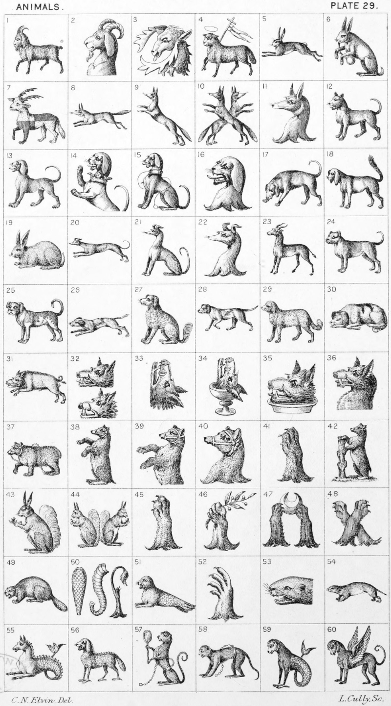

Plate 29.

Plate 29.
- Indian, or Assyrian Goat, passant
- Indian Goat's head couped
- Trogodice's head erased. Lambard
- "Holy, or Paschal Lamb
- Hare in full course. See Courant
- Hare sejant playing upon the bagpipes. Fitz-Ercald
- Calopus, or Chatloup pass, quarterly
or. and sa. horned of the last.
Foljambe
- Fox courant
- Fox saliant
- Two Foxes counter-saliant
- Foxe's head erased
- Alant statant
- Talbot statant
- Demi Talbot, ramp. ar. eared gu.,
gorged with a ducal coronet or.
Southwell
- Talbot sejant, collared and lined
- Talbot's head erased
- Bloodhound on scent
- Bloodhound statant
- Rabbit
- Greyhound courant
- Greyhound sejant
- Greyhound's head erased
- Spring-Bok statant
- Bull Dog statant
- Mastiff
- Beagle courant
- Spaniel sejant
- Pointer
- Newfoundland dog
- Dog-sleeping. Robertson
- Boar courant
- Boar's head couped
Boar's head erased
- Boar's head erect and erased. Loftus
- Boar's head erect in a cup
- Boar's head erased in a dish
- Boar's head and neck couped
- Bear pass, muzzled and chained
- Bear sejant
- Demi Bear ramp.
- Bear's head erased
- Bear's Gamb erased
- Bear and ragged-staff
- Squirrel sejant holding a nut
- Two Squirrels sejant addorsed
- Lion's Gamb erect and erased or. Goldingham
- Lion's Gamb holding a laurel branch
fructed ppr. Flint
- Two Lion's Gambs sa. supporting a
Crescent ar. Leche
- Two Lion's Gambs in saltire gu.
Dobson
- Beaver <
- > Beaver's tail
Proboscis
Lion's Tail. Three lions' tails erect,
erased borne by the family of
Cork
- Seal
- Seal's-paw
- Otter's head couped
- Otter
- Sea-Horse
- Sea-Dog
- Monkey, or Ape admiring himself in
a mirror ppr. also blazoned a
monkey sejant enceppe admiring
himself in a looking-glass
- Monkey passant
- Sea-Monkey
- Winged-Monkey, or Ape Winged